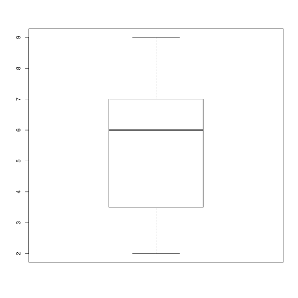
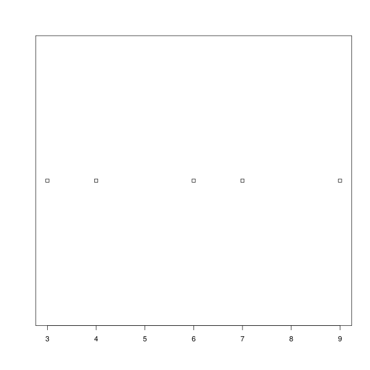
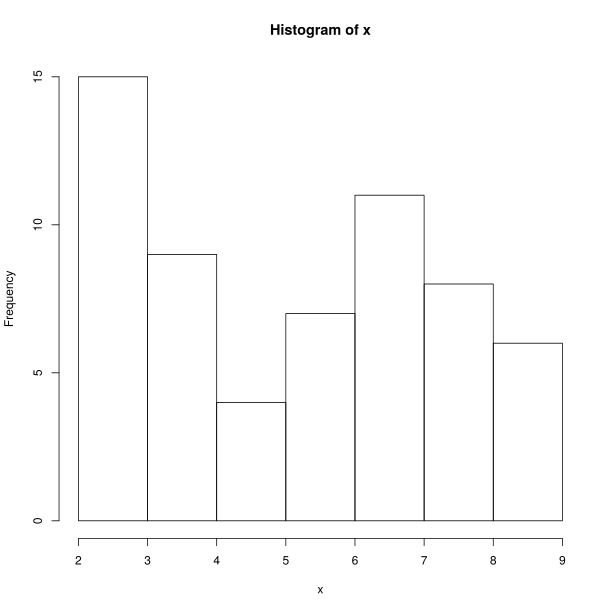
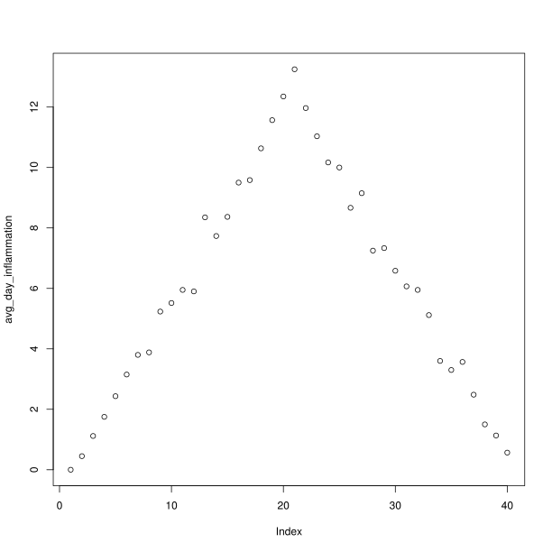
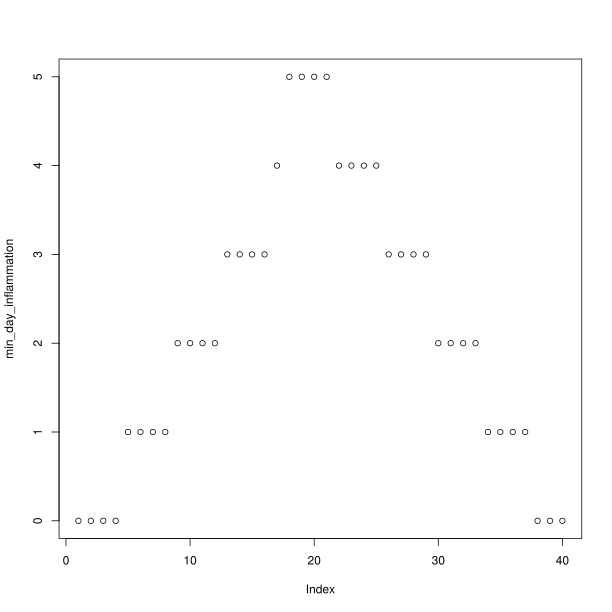
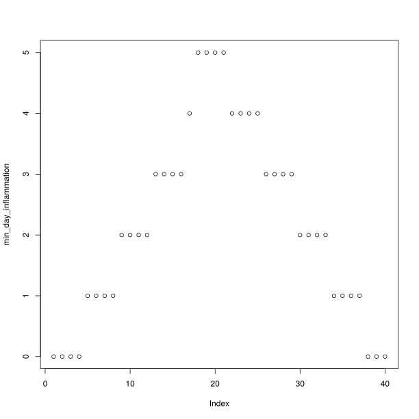

Making Choices
Overview
Teaching: 30 min
Exercises: 0 minQuestions
How do I make choices using
ifandelsestatements?How do I compare values?
How do I save my plots to a PDF file?
Objectives
Save plot(s) in a PDF file.
Write conditional statements with
ifandelse.Correctly evaluate expressions containing
&&(‘and’) and||(‘or’).
Our previous lessons have shown us how to manipulate data, define our own functions, and repeat things. However, the programs we have written so far always do the same things, regardless of what data they’re given. We want programs to make choices based on the values they are manipulating.
Saving Plots to a File
So far, we have built a function analyze to plot summary statistics of the inflammation data:
analyze <- function(filename) {
# Plots the average, min, and max inflammation over time.
# Input is character string of a csv file.
dat <- read.csv(file = filename, header = FALSE)
avg_day_inflammation <- apply(dat, 2, mean)
plot(avg_day_inflammation)
max_day_inflammation <- apply(dat, 2, max)
plot(max_day_inflammation)
min_day_inflammation <- apply(dat, 2, min)
plot(min_day_inflammation)
}
And also built the function analyze_all to automate the processing of each data file:
analyze_all <- function(folder = "data", pattern) {
# Runs the function analyze for each file in the given folder
# that contains the given pattern.
filenames <- list.files(path = folder, pattern = pattern, full.names = TRUE)
for (f in filenames) {
analyze(f)
}
}
While these are useful in an interactive R session, what if we want to send our results to our collaborators?
Since we currently have 12 data sets, running analyze_all creates 36 plots.
Saving each of these individually would be tedious and error-prone.
And in the likely situation that we want to change how the data is processed or the look of the plots, we would have to once again save all 36 before sharing the updated results with our collaborators.
Here’s how we can save all three plots of the first inflammation data set in a pdf file:
pdf("inflammation-01.pdf")
analyze("data/inflammation-01.csv")
dev.off()
The function pdf redirects all the plots generated by R into a pdf file, which in this case we have named “inflammation-01.pdf”.
After we are done generating the plots to be saved in the pdf file, we stop R from redirecting plots with the function dev.off.
Overwriting Plots
If you run
dev.off, you will save plots to the most recently opened file. However, you won’t be able to open the previous pdf files because the connections were not closed. In order to get out of this situation, you’ll need to rundev.offuntil all the pdf connections are closed. You can check your current status using the functiondev.cur. If it says “pdf”, all your plots are being saved in the last pdf specified. If it says “null device” or “RStudioGD”, the plots will be visualized normally.
We can update the analyze function so that it always saves the plots in a pdf.
But that would make it more difficult to interactively test out new changes.
It would be ideal if analyze would either save or not save the plots based on its input.
Conditionals
In order to update our function to decide between saving or not, we need to write code that automatically decides between multiple options. The computer can make these deicisons through logical comparisons.
num <- 37
num > 100
[1] FALSE
As 37 is not greater than 100, this returns a FALSE object. And as you likely guessed, the opposite of FALSE is TRUE.
num < 100
[1] TRUE
We pair these logical comparison tools with what R calls a conditional statement, and it looks like this:
num <- 37
if (num > 100) {
print("greater")
} else {
print("not greater")
}
print("done")
[1] "not greater"
[1] "done"
The second line of this code uses an if statement to tell R that we want to make a choice.
If the following test is TRUE, the body of the if (i.e., the lines in the curly braces underneath it) are executed.
If the test is FALSE, the body of the else is executed instead.
Only one or the other is ever executed:

In the example above, the test num > 100 returns the value FALSE, which is why the code inside the if block was skipped and the code inside the else statement was run instead.
num > 100
[1] FALSE
And as you likely guessed, the opposite of FALSE is TRUE.
num < 100
[1] TRUE
Conditional statements don’t have to include an else.
If there isn’t one, R simply does nothing if the test is false:
num <- 53
if (num > 100) {
print("num is greater than 100")
}
We can also chain several tests together when there are more than two options. This makes it simple to write a function that returns the sign of a number:
sign <- function(num) {
if (num > 0) {
return(1)
} else if (num == 0) {
return(0)
} else {
return(-1)
}
}
sign(-3)
[1] -1
sign(0)
[1] 0
sign(2/3)
[1] 1
Note that when combining else and if in an else if statement, the if portion still requires a direct input condition. This is never the case for the else statement alone, which is only executed if all other conditions go unsatisfied.
Note that the test for equality uses two equal signs, ==.
Other Comparisons
Other tests include greater than or equal to (
>=), less than or equal to (<=), and not equal to (!=).
We can also combine tests.
Two ampersands, &&, symbolize “and”.
Two vertical bars, ||, symbolize “or”.
&& is only true if both parts are true:
if (1 > 0 && -1 > 0) {
print("both parts are true")
} else {
print("at least one part is not true")
}
[1] "at least one part is not true"
while || is true if either part is true:
if (1 > 0 || -1 > 0) {
print("at least one part is true")
} else {
print("neither part is true")
}
[1] "at least one part is true"
In this case, “either” means “either or both”, not “either one or the other but not both”.
Choosing Plots Based on Data
Write a function
plot_distthat plots a boxplot if the length of the vector is greater than a specified threshold and a stripchart otherwise. To do this you’ll use the R functionsboxplotandstripchart.dat <- read.csv("data/inflammation-01.csv", header = FALSE) plot_dist(dat[, 10], threshold = 10) # day (column) 10
plot_dist(dat[1:5, 10], threshold = 10) # samples (rows) 1-5 on day (column) 10
Solution
plot_dist <- function(x, threshold) { if (length(x) > threshold) { boxplot(x) } else { stripchart(x) } }
Histograms Instead
One of your collaborators prefers to see the distributions of the larger vectors as a histogram instead of as a boxplot. In order to choose between a histogram and a boxplot we will edit the function
plot_distand add an additional argumentuse_boxplot. By default we will setuse_boxplottoTRUEwhich will create a boxplot when the vector is longer thanthreshold. Whenuse_boxplotis set toFALSE,plot_distwill instead plot a histogram for the larger vectors. As before, if the length of the vector is shorter thanthreshold,plot_distwill create a stripchart. A histogram is made with thehistcommand in R.dat <- read.csv("data/inflammation-01.csv", header = FALSE) plot_dist(dat[, 10], threshold = 10, use_boxplot = TRUE) # day (column) 10 - create boxplotplot_dist(dat[, 10], threshold = 10, use_boxplot = FALSE) # day (column) 10 - create histogram
plot_dist(dat[1:5, 10], threshold = 10) # samples (rows) 1-5 on day (column) 10Solution
plot_dist <- function(x, threshold, use_boxplot = TRUE) { if (length(x) > threshold && use_boxplot) { boxplot(x) } else if (length(x) > threshold && !use_boxplot) { hist(x) } else { stripchart(x) } }
Find the Maximum Inflammation Score
Find the file containing the patient with the highest average inflammation score. Print the file name, the patient number (row number) and the value of the maximum average inflammation score.
Tips:
- Use variables to store the maximum average and update it as you go through files and patients.
- You can use nested loops (one loop is inside the other) to go through the files as well as through the patients in each file (every row).
Complete the code below:
filenames <- list.files(path = "data", pattern = "inflammation-[0-9]{2}.csv", full.names = TRUE) filename_max <- "" # filename where the maximum average inflammation patient is found patient_max <- 0 # index (row number) for this patient in this file average_inf_max <- 0 # value of the average inflammation score for this patient for (f in filenames) { dat <- read.csv(file = f, header = FALSE) dat.means <- apply(dat, 1, mean) for (patient_index in 1:length(dat.means)){ patient_average_inf <- dat.means[patient_index] # Add your code here ... } } print(filename_max) print(patient_max) print(average_inf_max)Solution
# Add your code here ... if (patient_average_inf > average_inf_max) { average_inf_max <- patient_average_inf filename_max <- f patient_max <- patient_index }
Saving Automatically Generated Figures
Now that we know how to have R make decisions based on input values,
let’s update analyze:
analyze <- function(filename, output = NULL) {
# Plots the average, min, and max inflammation over time.
# Input:
# filename: character string of a csv file
# output: character string of pdf file for saving
if (!is.null(output)) {
pdf(output)
}
dat <- read.csv(file = filename, header = FALSE)
avg_day_inflammation <- apply(dat, 2, mean)
plot(avg_day_inflammation)
max_day_inflammation <- apply(dat, 2, max)
plot(max_day_inflammation)
min_day_inflammation <- apply(dat, 2, min)
plot(min_day_inflammation)
if (!is.null(output)) {
dev.off()
}
}
We added an argument, output, that by default is set to NULL.
An if statement at the beginning checks the argument output to decide whether or not to save the plots to a pdf.
Let’s break it down.
The function is.null returns TRUE if a variable is NULL and FALSE otherwise.
The exclamation mark, !, stands for “not”.
Therefore the line in the if block is only executed if output is “not null”.
output <- NULL
is.null(output)
[1] TRUE
!is.null(output)
[1] FALSE
Now we can use analyze interactively, as before,
analyze("data/inflammation-01.csv")
 

but also use it to save plots,
analyze("data/inflammation-01.csv", output = "inflammation-01.pdf")
Before going further, we will create a directory results for saving our plots.
It is good practice in data analysis projects to save all output to a directory separate from the data and analysis code.
You can create this directory using the shell command mkdir, or the R function dir.create()
dir.create("results")
Now run analyze and save the plot in the results directory,
analyze("data/inflammation-01.csv", output = "results/inflammation-01.pdf")
This now works well when we want to process one data file at a time, but how can we specify the output file in analyze_all?
We need to do two things:
- Substitute the filename ending “csv” with “pdf”.
- Save the plot to the
resultsdirectory.
To change the extension to “pdf”, we will use the function sub,
f <- "inflammation-01.csv"
sub("csv", "pdf", f)
[1] "inflammation-01.pdf"
To add the “results” directory to the filename use the function file.path,
file.path("results", sub("csv", "pdf", f))
[1] "results/inflammation-01.pdf"
Now let’s update analyze_all:
analyze_all <- function(pattern) {
# Directory name containing the data
data_dir <- "data"
# Directory name for results
results_dir <- "results"
# Runs the function analyze for each file in the current working directory
# that contains the given pattern.
filenames <- list.files(path = data_dir, pattern = pattern)
for (f in filenames) {
pdf_name <- file.path(results_dir, sub("csv", "pdf", f))
analyze(file.path(data_dir, f), output = pdf_name)
}
}
Now we can save all of the results with just one line of code:
analyze_all("inflammation.*csv")
Now if we need to make any changes to our analysis, we can edit the analyze function and quickly regenerate all the figures with analyze_all.
Changing the Behavior of the Plot Command
One of your collaborators asks if you can recreate the figures with lines instead of points. Find the relevant argument to
plotby reading the documentation (?plot), updateanalyze, and then recreate all the figures withanalyze_all.Solution
analyze <- function(filename, output = NULL) { # Plots the average, min, and max inflammation over time. # Input: # filename: character string of a csv file # output: character string of pdf file for saving if (!is.null(output)) { pdf(output) } dat <- read.csv(file = filename, header = FALSE) avg_day_inflammation <- apply(dat, 2, mean) plot(avg_day_inflammation, type = "l") max_day_inflammation <- apply(dat, 2, max) plot(max_day_inflammation, type = "l") min_day_inflammation <- apply(dat, 2, min) plot(min_day_inflammation, type = "l") if (!is.null(output)) { dev.off() } }
Key Points
Save a plot in a pdf file using
pdf("name.pdf")and stop writing to the pdf file withdev.off().Use
if (condition)to start a conditional statement,else if (condition)to provide additional tests, andelseto provide a default.The bodies of conditional statements must be surrounded by curly braces
{ }.Use
==to test for equality.
X && Yis only true if both X and Y are true.
X || Yis true if either X or Y, or both, are true.